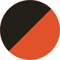
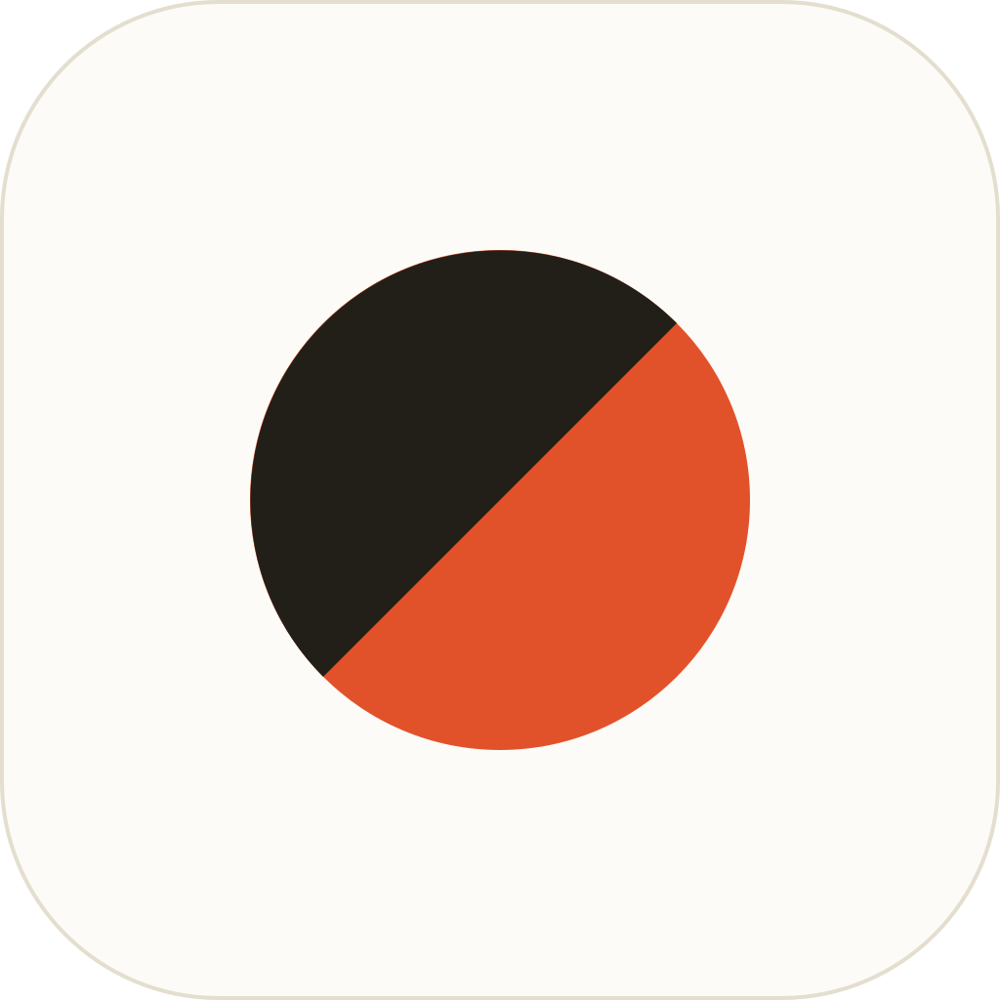
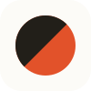

Der zweifarbige Griff-Punkt als Marke · Chalk-Palette · Bricolage Grotesque
Lockup

App-Icon & Favicon


Farben
#221F19#E2522A#FCFBF7#F4F0E8Hinweis zur Wortmarke
Die Wortmarke ist gesetzte Type — Bricolage Grotesque, Weight 800, Tracking −0.03em, Zeilenhöhe 0.92 (zweizeilig: „Boulder" in Tinte, „Challenges" in Vermillon). Sie ist kein eigenes Bild-Asset: in der App per CSS setzen (Font ist bereits eingebunden). Für statische Exporte (z. B. Social-Preview) die Schrift in Pfade umwandeln. Das eigentliche Logo-Asset ist der Griff-Punkt (logo-mark.svg).